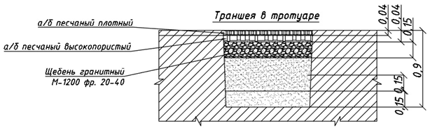
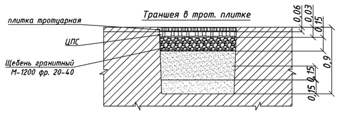
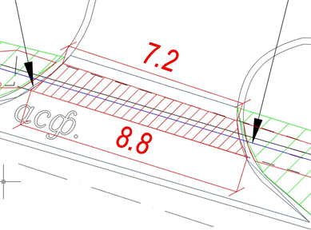
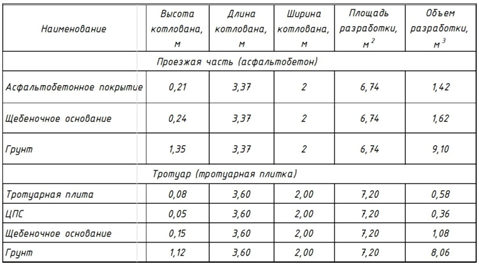
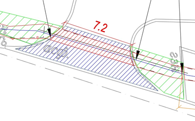
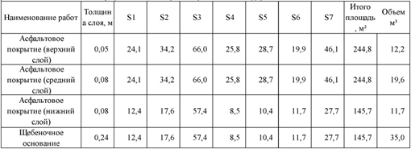

Исполнительная документация на благоустройство (ГП)

На этом уроке освоите навыки составления исполнительной документации на благоустройство.
Для начала посмотрите видео. В нем подробно раскрыли особенности оформления документации на восстановление благоустройства и поделились важными советами, которые помогут вам сдать исполнительную документацию с первого раза.
Источник и ограничения: видеоблок платформы не содержит открытого адреса файла.
Исполнительную документацию на благоустройство можно разделить на два этапа:
- нарушение благоустройства (при наличии данных работ)
- восстановление благоустройства
Теперь давайте посмотрим, из каких документов они состоят.
Исполнительная документация на нарушенное благоустройство:
- Журнал общих работ
- АОСР на разборку покрытий (указывать тип покрытия)
- АОСР на демонтаж бордюров
- Исполнительная схема нарушенного благоустройства
Исполнительная документация на восстановление благоустройства:
- Журнал общих работ
- Журнал входного контроля
- ИС устройства основания под проезды, тротуары;
- ИС устройства искусственных оснований под проезды, тротуары (на каждый слой)
- ИС монтажа бордюрного камня
- ИС устройства покрытий проездов, тротуаров (на каждый слой а/б)
- ИС на срезку верхнего слоя а/б (фрезерование), т.к. верхний слой должен перекрывать нижний.
- АОСР устройство естественного основания под проезды и тротуары;
- АОСР монтаж бордюров;
- АОСР на фрезерование верхнего слоя а/б
- АОСР устройство покрытия тротуаров и проездов
- АОСР озеленение территории (устройство газонов, посадка деревьев и кустов)
- Протоколы уплотнения основания (на каждый слой)
- Протоколы испытаний вырубок асфальтобетона
- Сертификаты и паспорта на используемый материал
При подготовке исполнительной документации учитывайте тип покрытия, а также назначение покрытия – проезжая часть, внутриквартальные территории и тротуар, т.к. толщина и количество слоев асфальта меняется
Как рассчитать объемы на нарушенное благоустройство
Нарушенное благоустройство включает в себя нарезку швов в а/б, разборку а/б покрытия (одновременно всех слоев), разборку щебеночного покрытия. При покрытии из тротуарной плитки – разборка тротуарной плитки, разборка щебеночного основания (одним объемом щебень и ЦПС).



На исполнительных схемах указываются общий план, разрезы котлованов или траншей для указания толщины слоев, а также карточка подсчета площадей.

При расчете восстановления благоустройства площадь оснований, нижних слоев а/б принимается по площади разборки. Площадь фрезерования принимается как разница между площадью разборки и площадью восстановления верхнего слоя а/б, т.к. восстановление верхнего слоя будет больше.

Также составляется карточка подсчета площадей.

При подготовке АОСР обратите внимание на прикладываемые паспорта: крупнозернистый а/б используют для нижнего слоя, мелкозернистый – слоя верхнего.
Работы, выполненные вне агротехнического периода, т.е. глубокой осенью, зимой, ранней весной (в зависимости от региона его даты меняются), не принимаются
Теперь перейдем к практике и проверим, хорошо ли вы усвоили полученный материал урока.
{kind=link}
{kind=link}
{kind=link}
{kind=link}
{kind=link}
{kind=link}